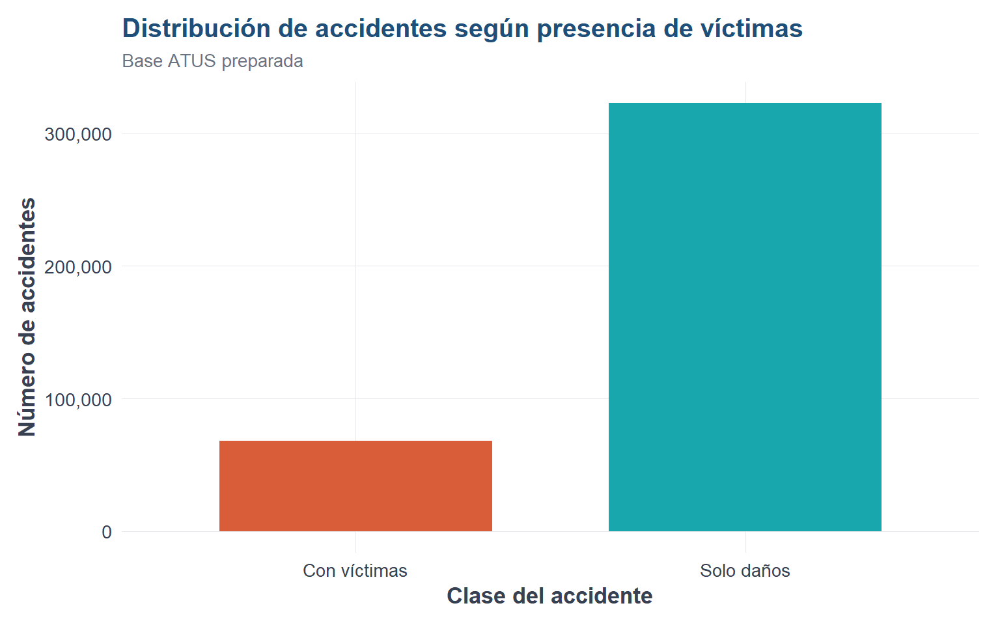
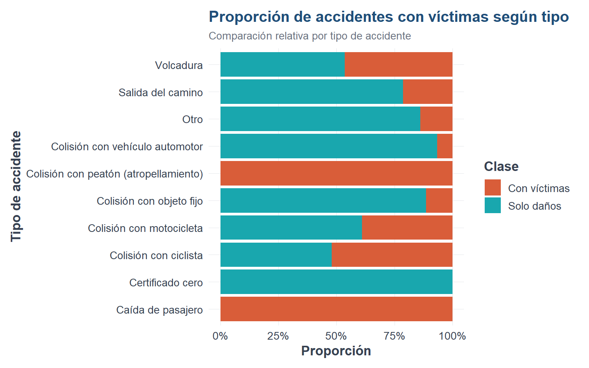

Código
library(readr)
library(dplyr)
library(ggplot2)
source("util_graficas.R")
ruta_atus_ml <- "datos/atus_ml_preparado.csv"
file.exists(ruta_atus_ml)[1] TRUEAl finalizar este capítulo, el lector será capaz de cargar una base preparada, revisar su estructura, calcular frecuencias, construir gráficas e interpretar patrones iniciales.
El análisis exploratorio de datos permite revisar la estructura de la base, detectar patrones iniciales e identificar posibles problemas antes de construir modelos.
Si una variable categórica tiene categorías (c_1, c_2, , c_k), la frecuencia absoluta de una categoría (c_j) se representa como:
\[ n_j = \sum_{i=1}^{n} I(y_i = c_j) \]
La proporción de la categoría (c_j) es:
\[ p_j = \frac{n_j}{n} \]
library(readr)
library(dplyr)
library(ggplot2)
source("util_graficas.R")
ruta_atus_ml <- "datos/atus_ml_preparado.csv"
file.exists(ruta_atus_ml)[1] TRUEif (file.exists(ruta_atus_ml)) {
atus_ml <- read_csv(ruta_atus_ml, show_col_types = FALSE)
print("Base preparada cargada correctamente.")
} else {
atus_ml <- NULL
print("No se encontró el archivo datos/atus_ml_preparado.csv. Ejecuta primero el capítulo 2.")
}[1] "Base preparada cargada correctamente."if (!is.null(atus_ml)) {
atus_ml <- atus_ml |>
mutate(
ID_HORA_NUM = as.numeric(ID_HORA),
MES_NUM = as.numeric(MES),
MES_FACTOR = factor(sprintf("%02d", MES_NUM), levels = sprintf("%02d", 1:12)),
DIASEMANA = factor(
DIASEMANA,
levels = c("lunes", "Martes", "Miercoles", "Jueves", "Viernes", "Sabado", "Domingo")
),
accidente_con_victimas = factor(
accidente_con_victimas,
levels = c("Con víctimas", "Solo daños")
)
)
}if (!is.null(atus_ml)) {
data.frame(filas = nrow(atus_ml), columnas = ncol(atus_ml))
} filas columnas
1 390627 9if (!is.null(atus_ml)) {
head(atus_ml)
}# A tibble: 6 × 9
accidente_con_victimas MES ID_HORA DIASEMANA TIPACCID CAUSAACCI ID_HORA_NUM
<fct> <chr> <chr> <fct> <chr> <chr> <dbl>
1 Solo daños 01 02 lunes Colisión… Conductor 2
2 Solo daños 01 03 lunes Colisión… Conductor 3
3 Con víctimas 01 04 lunes Colisión… Conductor 4
4 Solo daños 01 05 lunes Colisión… Conductor 5
5 Solo daños 01 06 lunes Colisión… Conductor 6
6 Con víctimas 01 07 lunes Colisión… Conductor 7
# ℹ 2 more variables: MES_NUM <dbl>, MES_FACTOR <fct>if (!is.null(atus_ml)) {
tabla_clase <- table(atus_ml$accidente_con_victimas)
tabla_clase
}
Con víctimas Solo daños
68108 322519 if (!is.null(atus_ml)) {
round(100 * prop.table(tabla_clase), 2)
}
Con víctimas Solo daños
17.44 82.56 if (!is.null(atus_ml)) {
ggplot(atus_ml, aes(x = accidente_con_victimas, fill = accidente_con_victimas)) +
geom_bar(width = 0.7) +
escala_clases_fill() +
scale_y_continuous(labels = etiqueta_numero) +
labs(
title = "Distribución de accidentes según presencia de víctimas",
subtitle = "Base ATUS preparada",
x = "Clase del accidente",
y = "Número de accidentes",
fill = "Clase"
) +
tema_libro() +
theme(legend.position = "none")
}
Interpretación del resultado.
La base está desbalanceada: hay muchos más accidentes de solo daños que accidentes con víctimas.
if (!is.null(atus_ml)) {
accidentes_mes <- atus_ml |>
count(MES_FACTOR, name = "n") |>
arrange(MES_FACTOR)
accidentes_mes
}# A tibble: 12 × 2
MES_FACTOR n
<fct> <int>
1 01 31600
2 02 32208
3 03 33237
4 04 32666
5 05 34665
6 06 31737
7 07 30062
8 08 31800
9 09 31351
10 10 33771
11 11 34047
12 12 33483if (!is.null(atus_ml)) {
ggplot(accidentes_mes, aes(x = MES_FACTOR, y = n)) +
geom_col(fill = col_azul, width = 0.75) +
scale_y_continuous(labels = etiqueta_numero, expand = expansion(mult = c(0, 0.08))) +
labs(
title = "Número de accidentes por mes",
subtitle = "Distribución mensual de registros ATUS",
x = "Mes",
y = "Número de accidentes"
) +
tema_libro()
}
if (!is.null(atus_ml)) {
accidentes_hora <- atus_ml |>
count(ID_HORA_NUM, name = "n") |>
arrange(ID_HORA_NUM)
accidentes_hora
}# A tibble: 24 × 2
ID_HORA_NUM n
<dbl> <int>
1 0 9143
2 1 7400
3 2 6594
4 3 5694
5 4 4880
6 5 4986
7 6 8034
8 7 15159
9 8 20666
10 9 19486
# ℹ 14 more rowsif (!is.null(atus_ml)) {
ggplot(accidentes_hora, aes(x = ID_HORA_NUM, y = n)) +
geom_col(fill = col_turquesa, width = 0.75) +
scale_x_continuous(breaks = 0:23) +
scale_y_continuous(labels = etiqueta_numero) +
labs(
title = "Número de accidentes por hora del día",
subtitle = "Distribución horaria de accidentes",
x = "Hora del día",
y = "Número de accidentes"
) +
tema_libro()
}
if (!is.null(atus_ml)) {
accidentes_dia <- atus_ml |>
count(DIASEMANA, name = "n") |>
arrange(DIASEMANA)
accidentes_dia
}# A tibble: 7 × 2
DIASEMANA n
<fct> <int>
1 lunes 69412
2 Martes 51215
3 Miercoles 51580
4 Jueves 50954
5 Viernes 56708
6 Sabado 58321
7 Domingo 52437if (!is.null(atus_ml)) {
ggplot(accidentes_dia, aes(x = DIASEMANA, y = n)) +
geom_col(fill = col_azul, width = 0.75) +
coord_flip() +
scale_y_continuous(labels = etiqueta_numero) +
labs(
title = "Número de accidentes por día de la semana",
subtitle = "Comparación semanal",
x = "Día de la semana",
y = "Número de accidentes"
) +
tema_libro()
}
if (!is.null(atus_ml)) {
accidentes_tipo <- atus_ml |>
count(TIPACCID, name = "n") |>
arrange(desc(n))
accidentes_tipo |> head(10)
}# A tibble: 10 × 2
TIPACCID n
<chr> <int>
1 Colisión con vehículo automotor 224720
2 Colisión con motocicleta 61869
3 Colisión con objeto fijo 43119
4 Certificado cero 15678
5 Volcadura 13371
6 Colisión con peatón (atropellamiento) 11052
7 Salida del camino 10067
8 Colisión con ciclista 4033
9 Otro 2934
10 Caída de pasajero 2153if (!is.null(atus_ml)) {
accidentes_tipo_top <- accidentes_tipo |>
slice_max(n, n = 10)
ggplot(accidentes_tipo_top, aes(x = reorder(TIPACCID, n), y = n)) +
geom_col(fill = col_turquesa, width = 0.75) +
coord_flip() +
scale_y_continuous(labels = etiqueta_numero) +
labs(
title = "Tipos de accidente más frecuentes",
subtitle = "Diez categorías con mayor número de registros",
x = "Tipo de accidente",
y = "Número de accidentes"
) +
tema_libro()
}
if (!is.null(atus_ml)) {
tipos_top <- atus_ml |>
count(TIPACCID) |>
slice_max(n, n = 10) |>
pull(TIPACCID)
atus_tipo_top <- atus_ml |>
filter(TIPACCID %in% tipos_top)
ggplot(atus_tipo_top, aes(x = TIPACCID, fill = accidente_con_victimas)) +
geom_bar(position = "fill") +
coord_flip() +
escala_clases_fill() +
scale_y_continuous(labels = etiqueta_porcentaje) +
labs(
title = "Proporción de accidentes con víctimas según tipo",
subtitle = "Comparación relativa por tipo de accidente",
x = "Tipo de accidente",
y = "Proporción",
fill = "Clase"
) +
tema_libro()
}
if (!is.null(atus_ml)) {
ggplot(atus_ml, aes(x = ID_HORA_NUM, fill = accidente_con_victimas)) +
geom_bar(position = "fill") +
scale_x_continuous(breaks = 0:23) +
scale_y_continuous(labels = etiqueta_porcentaje) +
escala_clases_fill() +
labs(
title = "Proporción de accidentes con víctimas por hora",
subtitle = "Comparación relativa por hora del día",
x = "Hora del día",
y = "Proporción",
fill = "Clase"
) +
tema_libro()
}
if (!is.null(atus_ml)) {
resumen_clase <- atus_ml |>
group_by(accidente_con_victimas) |>
summarise(
total = n(),
hora_promedio = mean(ID_HORA_NUM, na.rm = TRUE),
hora_minima = min(ID_HORA_NUM, na.rm = TRUE),
hora_maxima = max(ID_HORA_NUM, na.rm = TRUE),
.groups = "drop"
)
resumen_clase
}# A tibble: 2 × 5
accidente_con_victimas total hora_promedio hora_minima hora_maxima
<fct> <int> <dbl> <dbl> <dbl>
1 Con víctimas 68108 13.6 0 23
2 Solo daños 322519 13.7 0 23En este capítulo aprendimos a cargar una base preparada, revisar su estructura, calcular frecuencias, construir gráficas y detectar patrones iniciales.